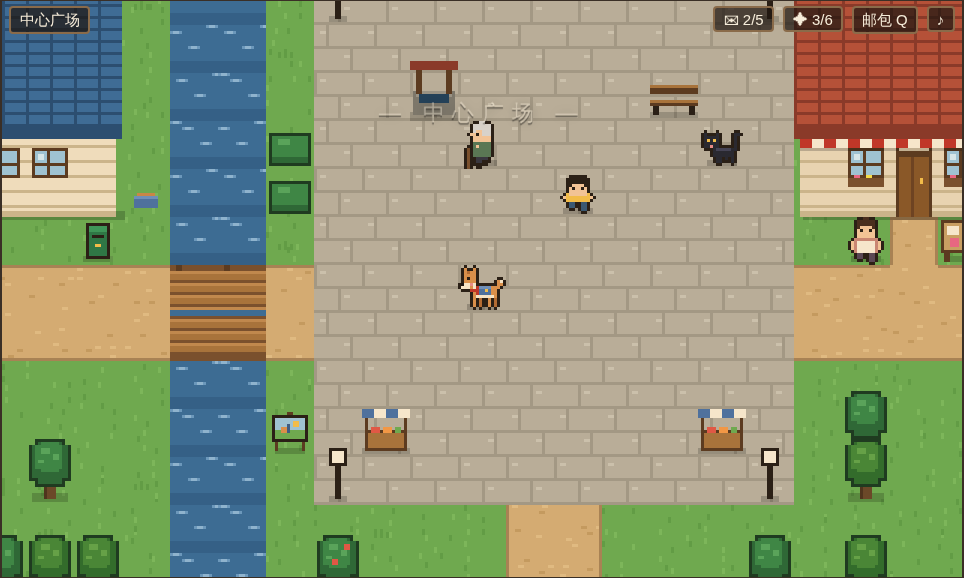
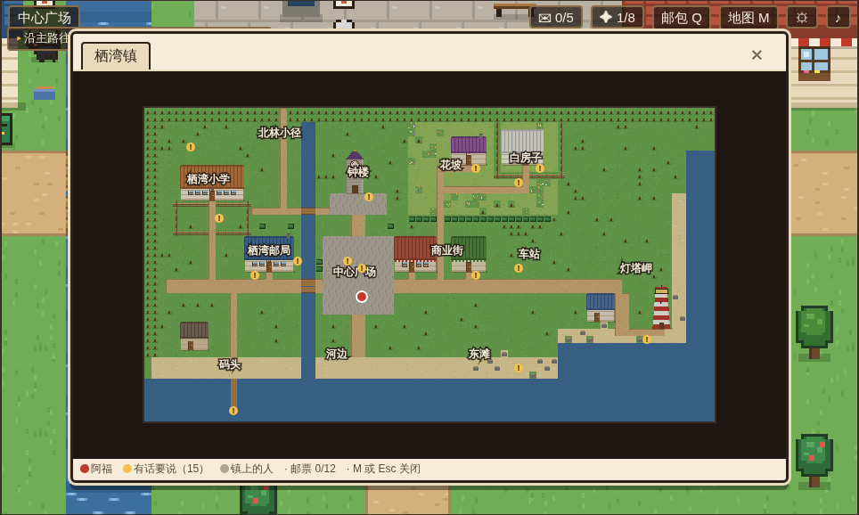
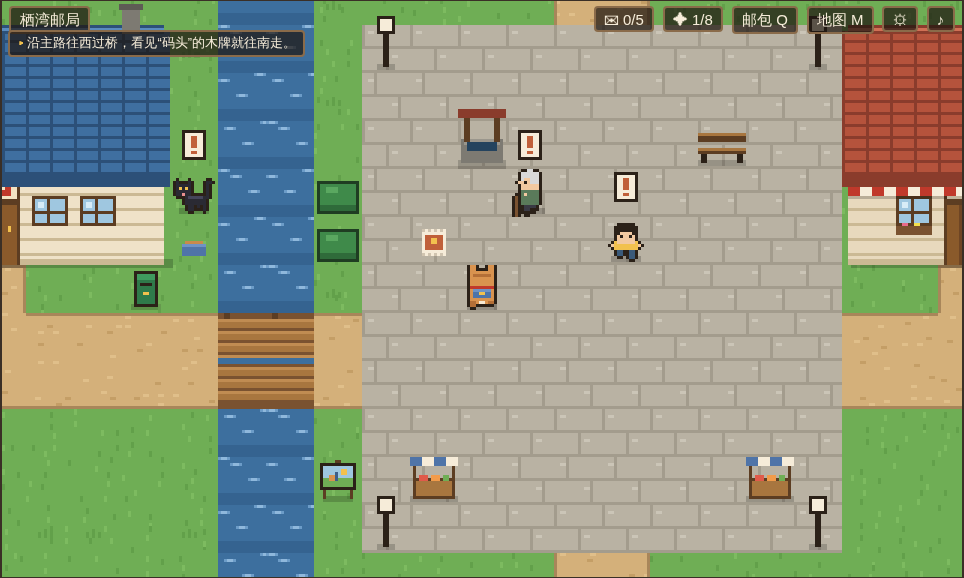
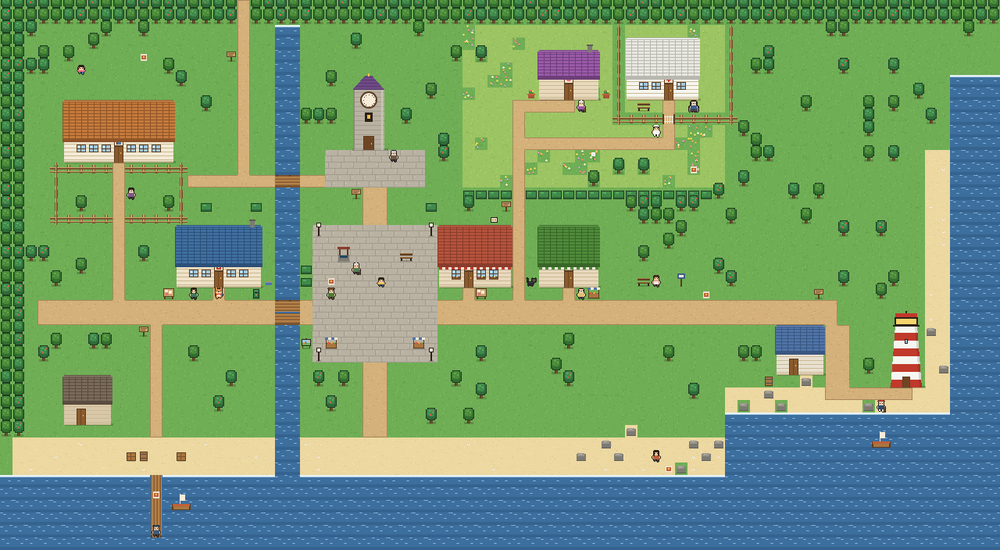
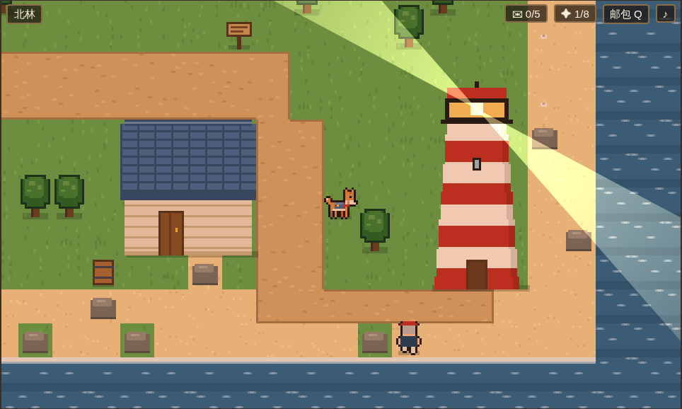
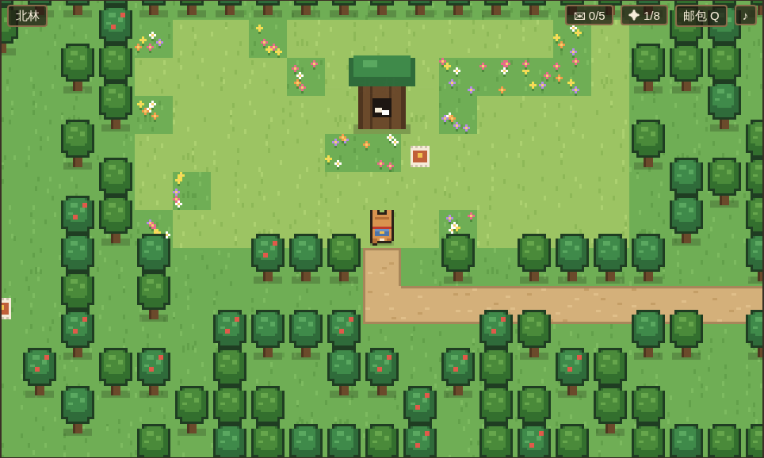
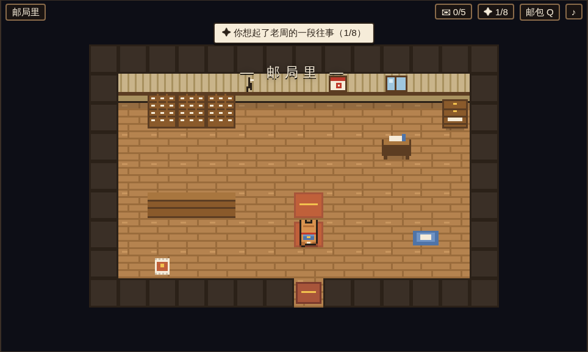

版本 1.2 · 2026-10-12（v1.1：灯塔岬、北林、四个室内、两条支线、两段记忆、12 枚邮票；v1.2：小卖部和教室、漂流瓶与失物招领、起雾、体验打磨） 类型：俯视角像素剧情探索（2D RPG 式小镇漫步） 平台：浏览器（桌面键盘 / 手机触屏），静态托管于 GitHub Pages 时长：一周目约 30–60 分钟；全结局 + 全收集约 2–3 小时

一只邮差狗，替生病的老邮差送完最后五封信。
栖湾镇的邮差老周送了三十八年信。上个月，他因为阿尔茨海默病住进了山坡上的疗养院。他在邮局抽屉里留下了五封”一定要送到”的信，以及一封写着”阿福 收”的信。阿福，是他养了十一年的狗。
玩家扮演阿福，在一天之内走遍小镇，把信送到五个人手里。每送出一封信，就解开一个人的心结，也找回一段老周的往事。最后，阿福带着这一路找回的记忆上山，去见那个可能已经不认识它的人。
参考作品：daisyh.dev/game（基于 game-cv，用 Phaser 把简历做成可以走动、对话的像素小镇）。
| 参考站的做法 | 本作的做法 | 理由 |
|---|---|---|
| Phaser 3 引擎，Vite 打包 | 零依赖原生 Canvas，普通 <script> |
不用构建，直接推到 GitHub Pages；双击 index.html
也能玩 |
世界数据在 world.json，需服务器加载 |
数据写成 JS 文件（data/*.js） |
本地 file:// 打开不受跨域限制 |
| 一张横向长图，5 个区域并排 | 80×44 格的小镇 + 北林 + 4 个可进入的室内 | 能走出”邮路”的感觉，有远近、有捷径 |
| NPC 是”不同时期的同一个人”，对话树只用来问答 | 16 个各有故事的居民，对话会改变世界状态 | 题目要求”丰富的故事线” |
| 计数”已交谈 x/12” | 计数”信件 x/5、记忆 x/8”、12 枚邮票 + 4 个结局 | 进度和情感目标绑在一起 |
| 像素美术用素材图集 | 所有瓷砖、建筑、角色都用代码画出来，自动描边 | 没有版权问题，改颜色只改一行 |
保留下来的精髓：像素小镇、走过去按空格对话、对话框逐字出现、选项可以用方向键/数字键选。
读信封上的地址/线索 → 在镇上走、问人、找东西 → 把信送到
↑ ↓
新线索、新物品 ← 对方的反应、选择分支、记忆碎片 ←| 操作 | 键盘 | 触屏 |
|---|---|---|
| 移动 | 方向键 / WASD | 左下方向盘 |
| 对话 / 查看 / 确认 | 空格 / 回车 / Z | A 键，或点对话框 |
| 选择选项 | ↑↓ 或数字键 1–9 | 直接点选项 |
| 汪 | X / B | “汪”键 |
| 邮包（信件、物品、记忆） | Q / Tab / I | 右上”邮包” |
| 声音开关 | P | 右上 ♪ |
| 地图 | M | 右上“地图” / 触屏“图” |
| 跑步 | 按住 Shift（设置里可改成默认跑） | 触屏“跑”（切换） |
| 设置 | Esc | 右上 ⚙ |
| 全屏 | F | — |
面前有能互动的东西时，头顶会出现一个跳动的黄色小箭头，底部提示”空格 · 对话 / 查看”。
邮包里有 6 封信：5 封待送 + 1 封”阿福 收”。每封信在邮包里显示收件人、寄件人和随进度变化的线索（例如林阿姨那封，会从”面包店在广场东边”逐步变为”去问问隔壁的钱叔”，再变为”她在东边车站”）。送完五封后，“阿福 收”出现【拆开】按钮。
| # | 标题 | 怎么得到 |
|---|---|---|
| 1 | 雨夜的邮袋 | 开场与小吴对话后自动获得 |
| 2 | 码头上的空位 | 在老海身边【趴下，等】 |
| 3 | 没有寄件人的蛋糕 | 把面包店后面的旧合影交给林阿姨 |
| 4 | 提前两年画的圈 | 把花坡上的蒲公英交给小雨 |
| 5 | 墙缝里的信 | 修好钟楼，让陈师傅和苏婆婆在钟楼下重逢 |
| 6 | 路是走出来的 | 把桥头那幅没画完的画交给阿木 |
| 7 | 台风夜的灯塔 | 点亮灯塔后回去和唐伯说话（支线） |
| 8 | 树洞先生 | 把北林树洞里的纸条交给小吴（支线） |
记忆可以在邮包”记忆”页反复回看。
煤球每次都会问”要不要看看某封信”。偷看会弹出信的全文，并给一句线索提示；收信人收到时会提示”封口被撕开过”。偷看 3 封及以上会进入结局”拆开的信”，偷看任意一封都无法达成完美结局。
在疗养院院子里，老周不认识阿福。对话里会出现与你已获得的记忆一一对应的动作选项。每做出一个，老周就想起一点；做满 5 个，他会叫出”阿福”。
| 结局 | 条件 |
|---|---|
| 交班（完美） | 叫出名字 + 0 次偷看 + 8 段记忆全齐 + 五条主线都走到最好的分支 |
| 拆开的信 | 偷看 ≥ 3 封 |
| 回家 | 叫出名字（≥5 个记忆动作） |
| 邮路尽头 | 其余情况 |
每个结局后有”后来”尾声：十个角色/地点各自按你的选择显示不同段落（共 19 段可能的尾声）。已解锁的结局记录在浏览器里，标题画面显示收集进度。
| 功能 | 说明 |
|---|---|
| 当前目标 | 左上角显示一句话目标。哪条线刚有进展就自动切到哪条；点一下可以在进行中的线之间切换 |
| “有新话”标记 | 还有没听过的话的人，头顶冒“！”。第一次和每个阶段都提醒，听过就消失 |
| 地图（M） | 当前地图缩略图：阿福的位置、谁有话要说、各区域名字；室内会显示小镇并标在门口 |
| 跑步 | 按住 Shift 跑，速度约 1.7 倍，脚下扬尘；可设成默认跑 |
| 设置（Esc） | 文字速度（慢/中/快/瞬间）、默认跑步、目标提示、“！”标记、天气效果；保存在本地 |
| 进门提示 | 面对能进的门时提示“空格 · 进门” |
| 黄昏起雾 | 送出 3 封信后起雾，灯塔点亮后雾散去大半 |


每段对话结束自动存档到
localStorage，标题画面出现”继续旅程”。结局后存档清除，但结局收集记录保留。

小镇 80×44 格（每格 16 像素）。河从北向南把小镇分成东西两半，南边是海，东边是灯塔岬。小学东边的小路通往北林（40×28）。邮局、钟楼、面包店、灯塔可以走进去（钟楼送信后开门，面包店和好后开门，灯塔要钥匙）。
| 区域 | 位置 | 内容 |
|---|---|---|
| 栖湾邮局 | 西侧主路边 | 出生点；小吴、煤球、邮筒、公告栏日历 |
| 栖湾小学 | 西北 | 王老师、操场、学校后面的大樟树（小雨） |
| 码头 | 西南海边 | 栈桥尽头的老海、渔具屋、船 |
| 钟楼 | 正北 | 停在 4:10 的钟、陈师傅 |
| 中心广场 | 正中 | 老井、刘奶奶、阿杰、集市摊位 |
| 商业街 | 广场东 | 林记面包（今日歇业）、钱记小卖部、两店之间的小巷 |
| 车站 | 东 | 公交站与长椅（林阿姨） |
| 花坡 | 东北高地 | 野花、蒲公英、苏婆婆的紫屋顶小屋 |
| 白房子 | 最东北 | 疗养院，篱笆与铁门、何护士、老周 |
| 东滩 | 东南 | 礁石上的阿木 |
| 灯塔岬 | 最东 | 红白灯塔、守灯人小屋、唐伯、礁石里的钥匙 |
| 西滩 | 西南 | 送出第一封信后，漂流瓶会被冲上沙滩 |
| 车站 | 东 | 车站旁的失物招领箱 |
| 北林 | 地图北端外 | 分岔小路、池塘、蘑菇地、护林员阿兰、树洞空地 |
| 河边 | 南桥一带 | 桥头的画架 |
| 角色 | 身份 | 在故事里 |
|---|---|---|
| 阿福 | 柴犬色的邮差狗，背蓝色邮包 | 玩家 |
| 老周（周守信） | 送了三十八年信的老邮差 | 终章才见到；一直通过信、记忆和别人的话出现 |
| 小吴 | 城里来的临时邮局职员，来了三周 | 引导者；不认路 |
| 煤球 | 邮局门口的黑猫，会说话 | 诱惑者 & 线索提供者 |
| 老海 | 码头的倔老头 | 第一封信：十二年没见的儿子今天回来 |
| 林阿姨（林秀） | 面包店老板娘 | 第二封信：二十年没说话的妹妹 |
| 小雨 | 十岁的小女孩，妈妈两年前去世 | 第三封信：妈妈留给她十岁生日的信 |
| 王老师 | 小雨的班主任 | 线索 |
| 陈师傅 | 守钟人 | 第四封信：四十年前没收到的信 |
| 苏婆婆（苏婉） | 花坡上的独居老人 | 第四封信的寄信人 |
| 阿木 | 桥下画画的年轻人 | 第五封信：美术学院录取通知，明天截止 |
| 钱叔 / 阿杰 / 刘奶奶 | 小卖部老板 / 广场上的男孩 / 井边的老奶奶 | 线索、传闻、老周的旧事 |
| 何护士 | 疗养院护士 | 守门人 |
| 唐伯 | 灯塔岬的守灯人，腿伤 | 支线「熄灭的灯」 |
| 阿兰 | 北林护林员 | 支线「树洞邮局」的向导 |
image-rendering: pixelated。js/sprites.js、js/tiles.js
逐像素绘制，角色自动加 1
像素深色描边。人物由参数拼装（发型、上衣、围裙、眼镜、拐杖……），新增角色只需写一行外观。index.html 页面骨架与覆盖层
css/style.css 界面样式
js/util.js 命名空间 G、随机数、描边、镜像
js/audio.js 合成音效与背景乐
js/sprites.js 角色精灵（阿福、人类生成器、猫、轮椅上的老周）
js/tiles.js 地形、建筑、钟楼、道具绘制
data/world.js 小镇地图画刷、建筑、道具、区域
data/world-more.js 北林、四个室内、12 枚邮票
data/story-main.js 信件/物品/记忆/过场/角色登场 + 邮局与道具对话
data/story-town.js 五条故事线 + 居民线索
data/story-endings.js 疗养院、终章、结局、尾声
data/story-v11.js v1.1 支线、室内对话、新记忆与对旧剧情的补丁
data/world-v12.js 小卖部、教室、漂流瓶与失物招领箱
data/story-v12.js v1.2 支线
js/extras.js 设置、当前目标、地图
js/state.js 旗标/物品/计数/记忆、条件与效果解释器、存档
js/map.js 多地图：生成格子与碰撞，预渲染地面，传送口
js/input.js 键盘、触屏、按优先级分发输入
js/dialogue.js 对话引擎
js/ui.js HUD、提示、过场、邮包、结局字幕
js/game.js 主循环、移动、互动、镜头、昼夜、标题与结局数据驱动：所有剧情都是 data/
里的纯数据，条件和效果是短字符串（如
'd:chen & !f:clock_fixed'、'i:gear;m:m_sea'）。写剧本不需要碰引擎代码，详见《剧本编写指南》。
已验证：自动化测试（Playwright）走通了全部 4 个结局（含 8 段记忆 + 12 枚邮票的完美路线）；检查了 214 个对话节点的跳转、场景、物品、记忆引用；用跨地图广度优先搜索确认 6 张地图、16 个角色、所有道具、邮票和门都能走到。
本文含全部剧透。
栖湾镇是一个有河、有海、有花坡的小镇。镇上只有一个邮差，周守信，大家叫他老周。他送了三十八年信，“一天没歇过”，台风那年蹚着齐腰深的水把信送到。
十一年前的一个雨夜，邮车送来的最后一个邮袋里，装着一只湿透的小狗。老周给它取名阿福，“有福气的福”。从那以后，栖湾的邮路上总是一个老人、一只狗。
一个月前，老周的记性坏到在镇上迷路，住进了花坡最东边的白房子疗养院。城里派来的临时职员小吴，在他的抽屉里找到五封信，抽屉上贴着：“一定要送到。”
老周的秘密：这五封信，全都和”今天”有关。他怕自己会忘，把它们留到了”该到的那一天”，在日历上画了五个圈。可他也怕到了那天，自己连日历都看不懂了，于是又写了第六封信，给阿福。
序 一定要送到（开场过场）
│ 邮局门口：小吴交班 → 记忆①「雨夜的邮袋」
│
├─ 第一封 码头 · 老海 ·········· 十二年没见的儿子，今天傍晚靠岸
├─ 第二封 车站 · 林阿姨 ········ 二十年没说话的妹妹，坐今天的末班车
├─ 第三封 大樟树 · 小雨 ········ 妈妈留给她十岁生日的信
├─ 第四封 钟楼 · 陈师傅 ········ 四十年前没收到的信，钟停在 4:10
└─ 第五封 东滩 · 阿木 ·········· 美术学院录取通知，明天截止
│ （五封顺序自由，可交叉推进）
│
├─ 拆开"阿福 收"（邮包里）→ 天色入夜
├─ 白房子：何护士读到信末的"附：请让这只狗进来"→ 开门
└─ 终章：把记忆一件一件还给老周 → 四个结局之一 → 尾声"后来"信封：码头尽头，不爱说话的人 寄自：远洋货轮”栖湾号”·海生
老海的儿子海生十二年前不顾反对去跑远洋，母亲在他出海时去世。老海对老周说：“他的信，退回去。”老周没有退。他把一百四十四封信收在邮局最里面的柜子里。最新这封说：这个月最后一个周六（就是今天）傍晚，船靠岸；“你要是来了，我就知道了。我不会先开口的，我跟你一样倔。”
| 选择 | 结果 |
|---|---|
| 【把信放在他脚边，转身离开】 | 送达。老海没看信，补网的手停住了。之后再来还可以选【趴下，等】 |
| 【在他旁边趴下，等】 | 老海想起老周也是这样陪他坐；读信；把儿子小时候从船钟上拆下的黄铜齿轮交给你，“我要等的东西今天就回来了”。→ 记忆②「码头上的空位」 |
尾声：等过 → 老海先开口：“瘦了。”小吴在柜子里找到那 144 封信，他读了一个冬天。／没等 → 他背对着海假装补网，直到身后有人喊”爸”，网掉进了海里。
信封：面包店的林姐（今天她可能不在店里） 寄自：城里·林青
二十年前的今天，妹妹林青从车站坐车去了城里。两人大吵一架，谁也不肯先开口。可每年姐姐生日，邮局都会收到一个没写寄件人的蛋糕盒；每年妹妹生日，姐姐都托老周捎一袋刚出炉的桂花卷——老周替两个犟脾气的人跑了二十年。今天面包店”歇业”，因为林阿姨每年这天都去车站坐一整天。
寻人线索：面包店门口的木牌 → 隔壁钱叔：“她每年今天都去东边的车站。” → 车站长椅。 隐藏物品：面包店后墙根下的旧合影（当年她从窗户扔出去的姐妹合照）。
| 选择 | 结果 |
|---|---|
| 【把信放在她手里】 | 送达。“我才不是在等她。”她留在车站。之后带合影回来仍可触发温暖分支 |
| 【叼出那张旧合影】 | 送达。她哭着笑：“我是不是太犟了。”回店里烤一炉”烫手的”桂花卷。→ 记忆③「没有寄件人的蛋糕」 |
尾声：合影 → “姐，你头发白了。”“好香。”第二年招牌上多了一个名字。／没合影 → 妹妹先走过来：“姐，我饿了。”姐姐骂了句”活该”，走得很慢，好让后面的人跟得上。
信封：小雨（十岁生日当天交给她） 寄自：（没有写寄件人）
两年前的冬天，一个瘦瘦的女人把信交给老周：“请在我女儿十岁生日那天给她。我等不到了。”老周提前两年在日历上画了圈。今天，小雨下课就躲了起来——每年生日她都躲。
寻人线索：王老师（操场）→ 地上出现三只纸鹤，从学校门口绕到学校背后 → 大樟树下的小雨。广场的阿杰也会”不小心”说漏嘴。 纸鹤上的字：“妈妈，今天我十岁了。”／“王老师说，十岁是大孩子了，大孩子不可以哭。”／“可是我还是好想你。” 隐藏物品：花坡上的蒲公英（苏婆婆提过”以前常有一对母女来吹蒲公英”）。
妈妈的信：“难过的时候，可以哭。十岁也可以，二十岁也可以。……学校后面那棵大樟树，是你出生那年我种的。”
| 选择 | 结果 |
|---|---|
| （可选）【把纸鹤一只一只放回她手里】 | 集齐三只纸鹤时出现，额外对白 |
| 【安静地靠在她身边】 | “你身上有太阳的味道。” |
| 【把蒲公英递给她】 | 她对蒲公英许愿：“妈妈，我十岁了。我过得很好。”→ 记忆④「提前两年画的圈」（之后补交蒲公英也可以） |
| 若已接下钟楼的委托 | 小雨把八音盒里的铜齿轮送给你 |
| 【汪！】/【歪头】 | “我以后能帮你送信吗？” 汪 → 她成为见习邮差（完美结局条件之一） |
信封：钟楼·守钟的人 寄自：苏婉（邮戳：四十年前）
四十年前，陈师傅和苏婉约好下午四点在车站见，一起去城里。她没来。他回来后把钟停在了四点十分。其实苏婉被父亲锁在家里，托人寄了一封信：“你一个人去城里吧……等你学成了就回来，把钟修好。钟响的那天，我会在钟楼下等你。多久都等。”那封信掉进了邮局分拣柜后面的墙缝。上个月搬柜子时，老周找到了它——想立刻送去钟楼，走到半路，忘了自己要去哪儿。那是他第一次在镇上迷路。
任务：送信 → 陈师傅要修钟，缺一个铜齿轮。 齿轮的三个来源（任选其一）： 1. 码头老海（【趴下，等】之后给）； 2. 小雨的八音盒（先接下钟楼委托，再给小雨送信）； 3. 问煤球 → 面包店与小卖部之间的小巷里会出现一个”像被谁咬过”的齿轮。
修好后钟声响起（全屏闪光与声波），苏婆婆从花坡走到钟楼下。与她对话触发重逢：“现在开口……还来得及吗？”“钟都响了。”→ 记忆⑤「墙缝里的信」
尾声：重逢 → 每天下午四点十分，钟楼下的长椅上坐着两个老人。／钟修好但没对话 → 紫色屋顶的小屋门开了，后来的事有好几个版本。／没修钟 → 有人看见他背着工具箱，第一次走上花坡。
信封：桥下的画家（他叫阿木，头发很乱） 寄自：省美术学院 招生办
阿木常在桥头陪老周说话、画画。他在画一幅《邮路》要送给老周：夕阳下的老邮差和背邮包的狗。可老周已经不认识他了，他画不下去，留下一张”不画了。画不出来。“的纸条，跑去东滩发呆。录取通知三个月前就到了，老周替他收着，还附了一张便条：”去吧。路是走出来的。“报到截止是明天，今天傍晚有最后一班车。
寻人线索：桥头画架（可【小心地把画叼走】）→ 钱叔：“他老往东滩礁石那儿跑。”
| 选择 | 结果 |
|---|---|
| 【把那幅没画完的画放在他面前】 | 他在老邮差眼角添了一道笑纹：“不是画得多好，是终于敢画完了。”把画《邮路》托你带给老周，去赶末班车。→ 记忆⑥「路是走出来的」 |
| 【歪着头看他】 | “我再想想。”之后带画回来仍可触发 |

守灯人唐伯摔了腿，灯塔两个月没亮。今天傍晚”栖湾号”进港——正是载着海生的那条船。 1. 和唐伯对话（小屋门口）→ 礁石那边出现灯塔钥匙； 2. 钱叔送你一壶灯油（“灯亮了，我请他喝酒”）； 3. 进灯塔，在灯室【用鼻子把油壶推到灯座边】→ 灯亮，入夜后海面有旋转光束； 4. 回去找唐伯 → 记忆⑦「台风夜的灯塔」：台风那年，是老周揣着还是小狗的阿福，爬了一百二十级台阶把灯点亮。 灯塔里还有一箱旧报纸，每张都夹着”老唐，今天的报纸。——周”。 尾声：点亮 → “栖湾号”准时进港，钱叔真的提着酒上了岬角。／没点亮 → 船在雾里晚了一个钟头，好在还是到了。
北林老樟树的树洞，是镇上孩子们的秘密邮筒：写给去世的外婆、走丢的猫、十年后的自己。每个礼拜都有”树洞先生”回信——那是老周。他住院后，纸条越塞越多，十七封没人回。 1. 阿杰或护林员阿兰告诉你树洞的事（北林入口在小学东边小路的尽头；岔路口往右，再一直往左）； 2. 在树洞拿到纸条和回信本； 3. 交给小吴 → 她读到”狗会说话的，只是它们说的话，只有信得过的人才听得懂”，决定接班 → 记忆⑧「树洞先生」。 尾声：树洞里又开始有回信了，署名还是”树洞先生”，只是字迹圆了一些。


送出第一封信后，西滩会冲上来一个漂流瓶。信是雾岛九岁的阿汐写的：“以前晚上能看见你们那边的灯塔，最近看不见了。” 1. 捡起漂流瓶； 2. 送完小雨的信后，把瓶子交给她，她会写回信（“我们这儿也有一只会送信的狗”）； 3. 把回信瓶交给码头的老海，他把瓶子扔进很远的浪里。 尾声：一个月后，渔船捎来阿汐的回信；如果灯塔也点亮了，她会说“灯塔又亮了！”。这也是 v2「雾海群岛」的伏笔。
车站旁的失物招领箱写着“周守信 代管”，里面有三样东西和老周的纸条： - 小运动鞋 → “广场上跑得最快的孩子” → 阿杰 - 老花镜 → “井边看报总眯眼的人” → 刘奶奶 - 挂铃铛的钥匙 → “总说自己什么都没丢的那位” → 钱叔 全部物归原主后，尾声里的木牌会换成“阿福 代管”。
煤球可以让你偷看任何一封还没送出的信（弹出全文 + 一句线索）。看小雨那封时它自己都会说：“这一封，我们不该看的。”
把记忆还给他：每段已获得的记忆对应一个动作——
| 记忆 | 动作 | 老周想起 |
|---|---|---|
| ① 雨夜的邮袋 | 把湿漉漉的鼻子埋进他手心 | “我好像从雨里捡过什么东西” |
| ② 码头上的空位 | 趴在他脚边 | 海浪，和一个不说话的倔老头 |
| ③ 没有寄件人的蛋糕 | 用爪子咚咚敲两下轮椅 | “不知道谁寄的。其实我知道。” |
| ④ 提前两年画的圈 | 把笔放进他手里 | “那封信……送到了吗？” |
| ⑤ 墙缝里的信 | 竖起耳朵望向钟楼 | 弄丢了四十年的信 |
| ⑥ 路是走出来的 | 把《邮路》放在他膝上（没拿画就绕轮椅走两圈） | “旁边一直有只狗。一直都有。” |
| ⑦ 台风夜的灯塔 | 对着窗外的灯塔轻轻叫一声 | “它一路都没叫。乖得很。” |
| ⑧ 树洞先生 | 把一片樟树叶放在他手心 | “……我好像，听得懂。” |
做满 5 个 → “阿……福。你是阿福。有福气的福。” 随时可以选【把头搁在他的膝盖上】结束。
| 结局 | 条件 | 最后一句 |
|---|---|---|
| 交班（完美） | 叫出名字；没偷看过；8 段记忆（含两条支线）；老海【等】、林阿姨【合影】、小雨【见习邮差】、钟楼重逢、阿木【赶车】 | “明天开始，栖湾的邮路，就交给你们了。我们下班吧。” |
| 拆开的信 | 偷看 ≥3 封 | “心是不能偷看的，只能送到。……下次别再拆了啊。” |
| 回家 | 叫出名字 | “好。那我们下班吧。”整个栖湾镇的灯一盏一盏亮起来。 |
| 邮路尽头 | 其余 | “小家伙，你明天还来吗？”“那我等你。”有些路走到了尽头，就变成了每天的习惯。 |
所有剧情都在 data/ 目录里，是普通的 JavaScript
对象。改完刷新浏览器就能看到，不需要编译。
| 文件 | 放什么 |
|---|---|
data/world.js |
小镇地图、建筑、道具、区域名 |
data/world-more.js |
北林、室内地图、邮票 |
data/story-main.js |
物品、信件、记忆、过场文字、角色登场表，邮局和道具的对话 |
data/story-town.js |
五条故事线和居民的对话 |
data/story-endings.js |
疗养院、终章、结局、尾声 |
data/story-v11.js |
v1.1 扩展；也示范了怎么用”补丁”方式往旧剧情里插入新分支 |
lin_give: {
who: 'lin', // 说话的人：角色 id；'none' 表示旁白（不显示头像）
fx: 'd:lin;scene:letter_lin', // 进入这个节点时执行的效果
text: ['……这字，是阿青的。', '（她读了很久。）'], // 多页，按空格翻页
go: 'lin_give2', // 播完后跳到哪个节点；不写就结束对话
},带选项：
hai_first: {
who: 'hai',
text: ['……老周的狗。', '又是那小子的信吧。'],
choices: [
{ t: '【把信放在他脚边，转身离开】', fx: 'd:hai;f:hai_left', go: 'hai_left' },
{ t: '【在他旁边趴下，等】', go: 'hai_wait1' },
{ t: '【叼出旧合影】', if: 'i:photo', go: 'xxx' }, // 有条件才出现的选项
{ t: '【走开】' }, // 没有 go：结束对话
],
},按条件分支（第一个满足的生效）：
hai_after: { who: 'hai', go: [
{ if: 'f:hai_wait', go: 'hai_after_w' },
{ go: 'hai_after_l' }, // 没有 if = 兜底
] },没有 text
的节点是”路由节点”，会直接跳走，玩家看不到。
顺序规则：fx
在进入节点时立刻执行；其中的
scene（信纸/过场）会等本节点的文字播完再弹出；m:（记忆过场）和
end（结局）会等整段对话结束后再播放。
| 写法 | 含义 |
|---|---|
f:名字 |
旗标已设置 |
i:物品 |
邮包里有这个物品 |
m:记忆 |
已想起这段记忆 |
d:信 |
这封信已送达 |
p:信 |
这封信被偷看过 |
c:计数>=3 |
计数器比较，支持 >= <= == > < |
! |
取反，如 !f:clock_fixed |
& |
并且 |
\| |
或者（优先级低于 &） |
内置计数器：delivered（已送达数）、memories（记忆数）、peek（偷看数）、kindness。你也可以随便起新名字，比如
c:zc+1，没用过的计数从 0 开始。
; 分隔）| 写法 | 作用 |
|---|---|
f:名字 / -f:名字 |
设置 / 清除旗标 |
i:物品 / -i:物品 |
得到（会弹提示）/ 失去物品 |
d:信 |
送达这封信（计数+1、音效、提示） |
m:记忆 |
解锁记忆（对话结束后播放回忆过场） |
peek:信 |
标记为偷看过 |
c:名字+1 |
计数器加减 |
scene:过场id |
弹出 G.STORY.scenes 里的过场 |
sfx:音效 |
blip select confirm bump bark item letter memory bell |
toast:文字 |
屏幕上方弹一句提示 |
bell |
钟楼敲钟（声音 + 画面波纹） |
end |
对话结束后进入结局判定 |
在 data/story-main.js 的 npcs
里加一项：
fisherboy: {
name: '小海',
look: { kid: true, hair: '#2b2118', style: 'short', shirt: '#4f74a8', pants: '#3a3a44' },
at: [ // 站在哪儿：取第一个满足条件的
{ if: 'f:storm', x: 10, y: 33, dir: 'up' },
{ x: 14, y: 35, dir: 'down' },
], // 都不满足 = 不出现
talk: [ // 对话入口：取第一个满足条件的
{ if: 'd:hai', go: 'boy_after' },
{ go: 'boy_first' },
],
},外观参数：skin hair shirt pants shoes
颜色；style 可选
short long bun pigtails bald；开关
kid glasses blush cane；颜色项
apron hat scarf beard。
然后在任一 story 文件里写
boy_first、boy_after
节点。坐标单位是格，可以打开 docs/img/map.png 对照（每格 16
像素）。注意别站在树、水、建筑上——测试脚本会检查。
在 letters 数组里加：
{ id: 'boy', to: '渔具屋的小海', from: '……',
hints: [ { if: 'd:boy', text: '已送达。' }, { text: '渔具屋在码头西边。' } ],
peekToast: '信里说……' },然后在 scenes 里加 letter_boy
作为信的内容，用 d:boy 送达。
主线目前写死”5 封送满才能拆最后一封”。如果信的数量改了，需要同步修改：
js/ui.js里的/5与>= 5、data/story-main.js里的c:delivered>=5、js/game.js里的dayTint。
memories 数组里加
{ id, title, lines }，用效果 m:id 解锁；终章
zhou_hub 里给它配一个动作选项。G.STORY.endings 里加一项
{ id, title, sub, if, lines }。按顺序取第一个满足条件的，所以条件越严格的放越前面。lines
里的元素可以是 { if, t }，按条件显示。G.STORY.epilogues
每组取第一个满足条件的段落。data/world.js 的 build(m)
用画刷画地图：
m.fill('g'); // 全部铺草
m.rect(x, y, w, h, 'w'); // 画矩形
m.set(x, y, 't'); // 单格
m.frame(x, y, w, h, 'e'); // 空心框（篱笆）
m.scatter(x, y, w, h, 'f', 0.12, 'h'); // 在花坡草地上随机撒野花
m.forest(0.09, 7); // 随机种树（自动避开路、建筑、道具、角色）地形字符：g 草地 h 花坡 f 野花
p 土路 o 石板 s 沙滩
w 水 b 桥 k 栈桥 t
树 u 灌木 e 篱笆 r 礁石。
建筑：{ id, name, x, y, w, h, door, icon, roof, wall, awning, chimney }，门在底边第
door 列。门前对话的节点名是 door_建筑id。
道具：{ kind, x, y, solid, talk, if }。kind
见 js/tiles.js 的
prop()：mailbox sign board lamp bench crate barrel well boat easel crane gear photo dandelion gate stall bowl busstop flowerpot spark。talk
以 pick_ 开头的道具，踩上去就会自动触发。
G.MAPS.school_in = {
id: 'school_in', name: '教室', indoor: true, w: 12, h: 8,
palette: { wall: '#e0d8c0', wallD: '#c0b898', trim: '#5c3d22' },
build(m) { m.fill('W'); m.rect(1, 2, 10, 5, 'F'); m.set(6, 7, 'M'); },
warps: [{ x: 6, y: 7, to: 'town', tx: 9, ty: 13, dir: 'down' }], // 踩门垫回小镇
buildings: [], props: [], areas: [],
};再给小镇里的建筑加
enter: { to: 'school_in', x: 6, y: 6, dir: 'up' }，需要条件才能进就加
lock: '条件'（锁着时显示 door_建筑id_locked
节点）。角色放进室内：at 里写
map: 'school_in'。室内字符：W 墙
F 木地板 K 石地板 T 瓷砖
M 门垫。
游戏是纯静态文件，没有构建步骤。下面三种方式任选一种。
在 GitHub 新建仓库，比如 afu-mail-route。
把整个 afu-mail-route/
文件夹的内容推上去（index.html 要在仓库根目录）：
cd afu-mail-route
git init && git add . && git commit -m "阿福的最后一班邮路"
git branch -M main
git remote add origin git@github.com:你的用户名/afu-mail-route.git
git push -u origin main仓库 → Settings → Pages → Build and deployment
选 Deploy from a branch，分支 main，目录
/ (root)，保存。
一两分钟后访问
https://你的用户名.github.io/afu-mail-route/。
仓库里已经带了 .nojekyll，GitHub 不会用 Jekyll
处理这些文件。
仓库里自带 .github/workflows/pages.yml。在
Settings → Pages 里把 Source 改成 GitHub
Actions，之后每次推送到 main 都会自动发布。
把整个文件夹复制到站点仓库的一个子目录，例如 game/：
你的站点仓库/
├── _config.yml
├── game/ ← 整个 afu-mail-route 的内容
│ ├── index.html
│ ├── css/ js/ data/ docs/
│ └── cover.png访问
https://你的站点/game/。所有路径都是相对路径，放在任何子目录都能用。
Jekyll 站点需要注意： - 文件夹名不要以下划线开头（Jekyll 会忽略
_xxx 目录）。 - 如果 _config.yml 里有
exclude 规则，确认没有排除 game/。 -
想在博客导航里加入口，链接到 /game/
即可；想嵌进文章里可以用：
html <iframe src="/game/" style="width:100%;aspect-ratio:5/3;border:0" allow="fullscreen"></iframe>
直接双击 index.html 就能玩（脚本不是 ES module，不受
file:// 限制）。
或者起一个本地服务器：
python3 -m http.server 8000
# 打开 http://localhost:8000在仓库根目录加一个 CNAME 文件写上域名，再到域名服务商把
CNAME 记录指向 你的用户名.github.io。
index.html 里已经写了
og:title、og:description、og:image（cover.png）。部分平台要求
og:image 是绝对地址，部署后可以改成
https://你的用户名.github.io/afu-mail-route/cover.png。
| 现象 | 处理 |
|---|---|
| 打开是 404 | 等 1–2 分钟；确认 Pages 的分支和目录设置正确；确认
index.html 在所选目录的根部 |
| 画面空白 | 打开浏览器控制台看报错；常见原因是只上传了部分文件夹，js/、data/
都要上传 |
| 没有声音 | 浏览器要求先有一次点击/按键才能出声；也可能按了 P 静音 |
| 想清空进度 | 标题画面点”新的一天”；或浏览器控制台执行
localStorage.clear()（结局收集也会清掉） |
| 手机上按钮太小 | 横屏游玩；触屏按钮会随画面放大 |
写于 2026-10-12。v1.1 已完成；v2、v3 是规划，按”每一版都能独立发布、都能玩”来拆。
data/ 里，引擎只做”怎么演”。这条从 v1 一直保留到
v3，它决定了后面能不能多人协作。| 类别 | 内容 |
|---|---|
| 引擎 | 多地图系统：室内、地图边缘传送、进门/出门淡入淡出；门可以带”上锁条件”；存档记录所在地图 |
| 地图 | 小镇从 60×44 扩到 80×44：东边新增灯塔岬（灯塔、守灯人小屋、礁石海岸）；北边新增北林（40×28，分岔小路、池塘、蘑菇地、护林员小屋、树洞空地） |
| 室内 | 邮局（分拣柜、墙缝、日历、工作日志、阿福的窝）、钟楼（齿轮机芯、图纸）、面包店（烤箱、照片墙，和好后林阿姨在店里）、灯塔（旋梯、灯室、窗景） |
| 剧情 | 支线「熄灭的灯」（唐伯、钥匙、灯油、点亮灯塔、夜里的光束）；支线「树洞邮局」（阿杰、阿兰、树洞先生的回信本、小吴接班）；老周的工作日志 |
| 记忆 | 6 → 8 段（新增「台风夜的灯塔」「树洞先生」），终章多两个动作 |
| 收集 | 12 枚「栖湾风物」邮票，邮包新增”邮票”页；集齐有专属尾声 |
| 角色 | 12 → 16 位（唐伯、阿兰；林阿姨、小吴新增行为） |
| 结局 | 完美结局「交班」改为需要 8 段记忆；尾声 14 → 19 段 |
| 类别 | 内容 |
|---|---|
| 体验 | 当前目标提示（自动跟进、点击切换）、地图（M）、按 Shift 跑步并扬尘、设置面板（文字速度、默认跑步、提示开关、天气开关）、“有新话”的“！”标记、“进门”提示、触屏“跑”“图”按钮 |
| 内容 | 新增钱记小卖部、小学教室两个室内；新增「海那边的信」（漂流瓶，埋下雾岛伏笔）和「失物招领」两条支线；黄昏起雾，灯塔点亮后雾散 |
| 规模 | 233 个对话节点，8 张地图，4 条支线，尾声 21 段 |
data/，加一层 lang 映射即可。栖湾只是雾海群岛里的一座小镇。群岛之间靠一条老旧的邮船航线相连，岛与岛之间常年有雾——人们说，雾是没送到的话变的。邮差是群岛上最受尊重的职业之一：他们把话从一座岛带到另一座岛，让雾散开一点。
老周年轻时，是这条航线上最年轻的邮船水手。他后来留在栖湾，原因是一个他从未说出口的故事。
| 元素 | 设计 |
|---|---|
| 区域 | 4 座岛，每座一个主题与一位”收信人群像”：栖湾（离别与重逢）、盐田岛（劳作与离乡）、钟鸣城（群岛首府，规则与人情）、无名礁（被遗忘的人） |
| 交通 | 邮船”信鸥号”，按航班表往返；错过就要等下一班——时间本身成为玩法 |
| 主线 | 阿福和小吴（见习邮差小雨同行）沿着老周年轻时的航线，把他珍藏的一叠没寄出的信送回各岛，拼出老周的过去 |
| 新系统 | 邮路规划：每天的信件、航班和天气组合成一张路线图；口碑：每座岛对”栖湾邮局”的信任度，影响能接到哪些信；雾：没送到的信让雾变浓，送到后雾散，地图视野随之变化 |
| 伙伴 | 小吴（会读信、会写回信）、小雨（认路、能进小孩才进得去的地方）、煤球（会开锁，但总想偷看信） |
| 表现 | 章节制，每座岛一个章节（约 1–1.5 小时），总时长 6–8 小时 |
| 技术 | 继续零依赖；地图改用 Tiled 编辑器导出 JSON（保留代码画刷作为补充）；对话改用可视化编辑器（Twine/Ink 风格导入） |
“3A”在独立像素游戏里不是指预算，而是指完成度：美术、音乐、叙事、系统、打磨，每一项都做到同类作品的上游。对标作品：《去月球》（叙事）、《星露谷物语》（生活感与系统深度）、《八方旅人》（HD-2D 视觉）、《风来之国》（像素美术与氛围）、《Undertale》（选择的分量）。
| 维度 | v3 目标 |
|---|---|
| 美术 | 手绘像素：32×32 角色，每人 8 方向行走 + 表情动画；地图分层、视差、动态光照（HD-2D 风格：像素精灵 + 实时光影、景深） |
| 音乐 | 原创配乐 20–30 首，每座岛一个主题，昼夜/天气变奏；环境声（海浪、钟声、集市） |
| 叙事 | 主线 15–20 小时；每个有名字的 NPC 都有日程表和自己的故事；选择影响多章节后的世界 |
| 系统 | 邮路规划 + 生活模拟（天气、季节、节日）+ 轻度解谜；无战斗或极轻量冲突，保持本作温柔的调性 |
| 演出 | 关键剧情的过场动画、镜头运动、全屏插画 |
| 本地化 | 简中 / 繁中 / 英 / 日 |
| 平台 | Web 免费序章 + Steam / Switch 完整版 |
| 项目 | 估计 |
|---|---|
| 团队 | 核心 4–6 人：编剧/策划、程序、像素美术 ×2、作曲/音效；外包动画、本地化、测试 |
| 周期 | 2–3 年 |
| 技术 | 迁移到 Godot 4（开源、2D 能力强、可导出
Web/桌面/主机），把 v1/v2 的 data/
剧本格式写成导入器，剧情资产直接复用 |
| 资金路径 | v1/v2 免费网页版积累玩家 → 制作可玩 Demo → Steam 愿望单 / 众筹 / 独立游戏发行商 |
data/story-*.js 剧本。| v1.1（现在） | v2（群岛） | v3（完整版） | |
|---|---|---|---|
| 地图 | 1 镇 + 北林 + 4 室内 | 4 岛 + 航线 | 4–6 岛，季节变化 |
| 时长 | 30–60 分钟 | 6–8 小时 | 15–20 小时 |
| 角色 | 16 | 50+ | 100+，带日程 |
| 美术 | 代码生成 16px | 代码 + 少量手绘 | 全手绘 32px + 动态光照 |
| 音乐 | 合成循环 1 首 | 每岛 1 首 | 原创 20–30 首 |
| 引擎 | 原生 Canvas | 原生 Canvas | Godot 4 |
| 平台 | GitHub Pages | GitHub Pages | Web 序章 + Steam/Switch |